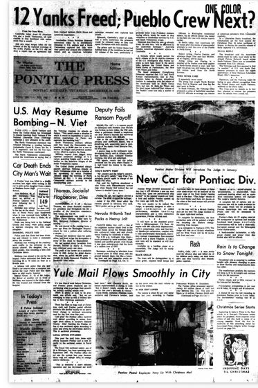
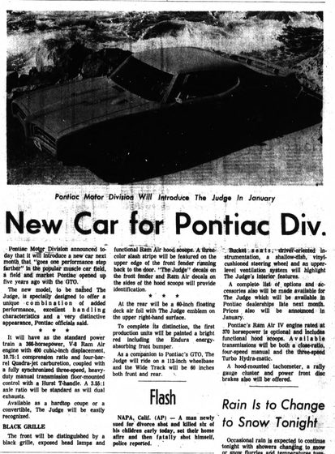
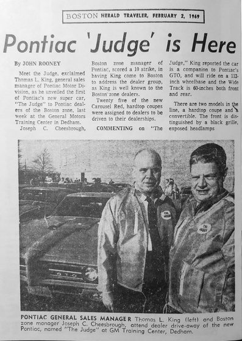
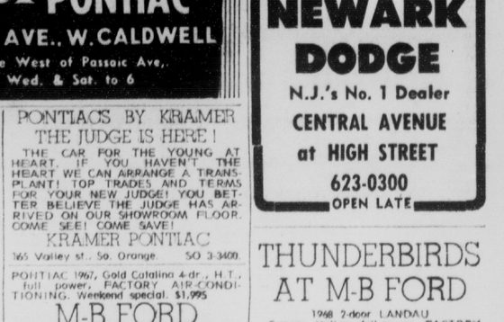
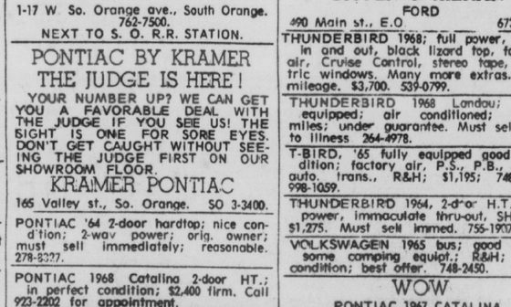
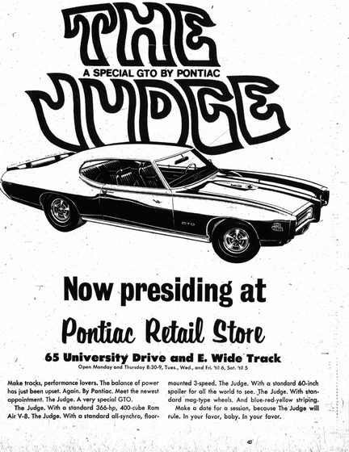
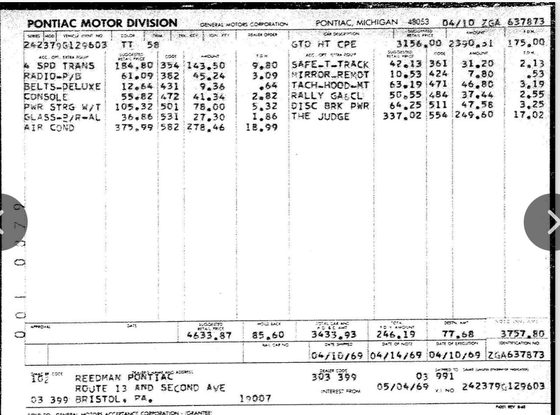
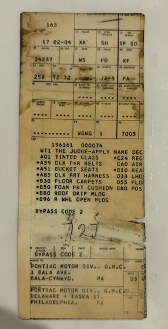

Claims on this page are labeled under the Research Standards & Evidence Policy v1.0.
What the clippings show
On December 19, 1968, the front page of The Pontiac Press announced that Pontiac Motor Division would introduce The Judge “next month,” that “the first production units will be painted a bright red including the Endura energy-absorbing front bumper,” and that the car “will be available in Pontiac dealerships late next month.” Documented fact Tier 1


The only documented zone drive-away found so far is in the Boston Herald Traveler, February 2, 1969. John Rooney reported that Thomas L. King, Pontiac’s general sales manager, unveiled The Judge to Boston-zone dealers “last week” at the General Motors Training Center in Dedham, with Boston zone manager Joseph C. Cheesbrough. “Twenty five of the new Carousel Red, hardtop coupes were assigned to dealers to be driven to their dealerships.” Documented fact Tier 3 Period newspaper; held clipping. A second such event in any other zone remains a Hypothesis.

Dealer ads then mark showroom arrival:
- January 30, 1969, Healdsburg Tribune, Enterprise and Scimitar, p. 7: “The ‘JUDGE’ Is Coming!!” As of that date this dealer did not yet have the car. Tier 4 lead, OCR only. No page image on file. California Digital Newspaper Collection
- January 31, 1969, Newark Evening News, also titled The Evening News, p. 43: Kramer Pontiac, South Orange, “THE JUDGE IS HERE!” and “THE JUDGE HAS ARRIVED ON OUR SHOWROOM FLOOR.” A second Kramer ad ran in the Newark Sunday News, February 2, 1969. Documented fact Tier 3 Held page image.
- February 12, 1969, Los Gatos Times, p. 8: Wilson-Stevens announced the new Pontiac Judge “is now on display.” Tier 4 lead, OCR only. No page image on file. California Digital Newspaper Collection
- February 13, 1969, Orange Review of Orange, Va., p. 8: Reynolds Pontiac-Cadillac-GMC, “The Judge is here!” Tier 4 lead, OCR only. No page image on file. Virginia Chronicle That Orange, Va., sat in Washington zone 04 is a Corroborated interpretation.
- February 17, 1969, The Pontiac Press, page C-5, not C-6: Pontiac Retail Store, “Now presiding at” The Judge. Documented fact Tier 1 Held page image.



A later free-source search of every reachable PMD zone found no second zone drive-away. Absence in papers that were blocked or not searched is not evidence of absence.
How this explains 99x zone-lot holds into mid-February
Early Judges shipped to a 99x ship-to code went to a zone lot, not straight to the selling dealer. Corroborated interpretation From the invoices and broadcast sheets on file.
The clippings give a public timetable that fits those mid-February invoices. PMD told the public the car would reach dealerships “late next month,” that is, late January 1969. The Boston zone released 25 Carousel Red hardtops at a late-January drive-away. One dealer still advertised the car as “Coming” on January 30. Others advertised it as on the floor from January 31 through mid-February. Holds at the zone lots into mid-February are therefore explained as a staged rollout, not as a mystery in each car’s paperwork. Corroborated interpretation
The open exception: G129603, kept in view Unresolved
That reading does not explain 242379G129603, invoice ZGA 637873. The broadcast sheet dates the build February 4, 1969, from a dealer photograph. Tier 4 The invoice ships the car April 10, 1969, to Reedman Pontiac, Bristol, Pa., dealer 303 399, ship-to 03 991, the Philadelphia zone lot; date of note April 14; interest from May 4. Holdback on this invoice is 85.60, against a constant 59.02 on readable January–March invoices. Invoice fields: Documented fact Tier 2
The car therefore sat at the Philadelphia zone lot from a February 4 build until an April 10 ship, well past the mid-February window the clippings explain. A search of free sources found no Reedman or Philadelphia-area ad, show, or event that accounts for that wait. Unresolved
This car is kept in the record as the open exception. Leaving it out would make the rollout theory look cleaner than the evidence is.


The only documents on rollout timing
The newspaper clippings collected here are the only documents found so far that bear on the timing of the early 1969 Judge rollout and of the zone-lot holds. Pontiac Motor Division documents that would describe how those cars were allocated, held at zone lots, and released to dealers have not been made public.
Early pattern cars were ordered by Pontiac
The early pattern cars were ordered by Pontiac.1
1 Mike Noun, “Diggin’ For The Judge Data,” POCI Smoke Signals, October 2016, pp. 11–15. Tier 3
Sources
Held page images are shown as thumbnails above. Three dealer ads were read from OCR only; no page image is on file, and none has been substituted.
- The Pontiac Press, Thursday, December 19, 1968, front page, and the “New Car for Pontiac Div.” article. Documented fact Tier 1 Oakland University Libraries: https://hdl.handle.net/10323/12675
- Boston Herald Traveler, February 2, 1969, “Pontiac ‘Judge’ is Here,” John Rooney. Documented fact Tier 3 Period newspaper; held clipping.
- Kramer Pontiac ads. Newark Evening News, also titled The Evening News, January 31, 1969, p. 43, and Newark Sunday News, February 2, 1969. Documented fact Tier 3 Period advertising; held page image.
- The Pontiac Press, Monday, February 17, 1969, page C-5, Pontiac Retail Store “Now presiding at” ad. Documented fact Tier 1 Oakland University Libraries: https://hdl.handle.net/10323/12621
- Healdsburg Tribune, Enterprise and Scimitar, January 30, 1969, p. 7. “The ‘JUDGE’ Is Coming!!” Tier 4 lead, OCR only. No page image on file. https://cdnc.ucr.edu/?a=d&d=HTES19690130.2.63.7
- Los Gatos Times, February 12, 1969, p. 8. Wilson-Stevens, Judge “now on display.” Tier 4 lead, OCR only. No page image on file. https://cdnc.ucr.edu/?a=d&d=LGT19690212.1.8
- Orange Review, Orange, Va., February 13, 1969, p. 8. Reynolds Pontiac-Cadillac-GMC, “The Judge is here!” Tier 4 lead, OCR only. No page image on file. https://www.virginiachronicle.com/?a=d&d=ORV19690213.1.8
- Mike Noun, “Diggin’ For The Judge Data,” POCI Smoke Signals, October 2016, pp. 11–15. Tier 3
- G129603 invoice ZGA 637873, shipped April 10, 1969, ship-to 03 991. Documented fact Tier 2 PHS copy.
- G129603 broadcast sheet, dealer photograph, build date 02-04. Tier 4